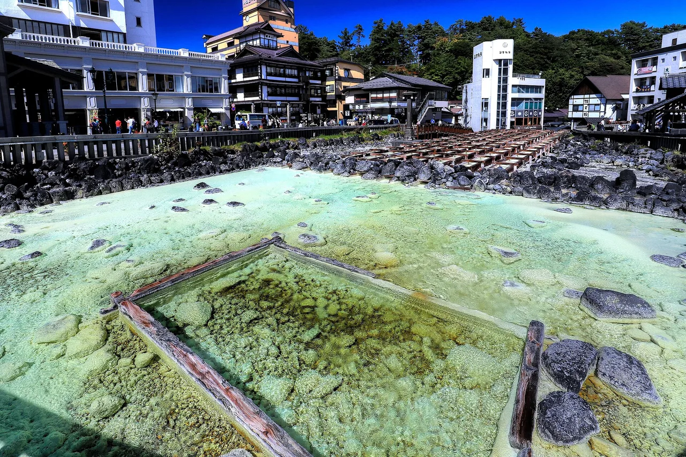
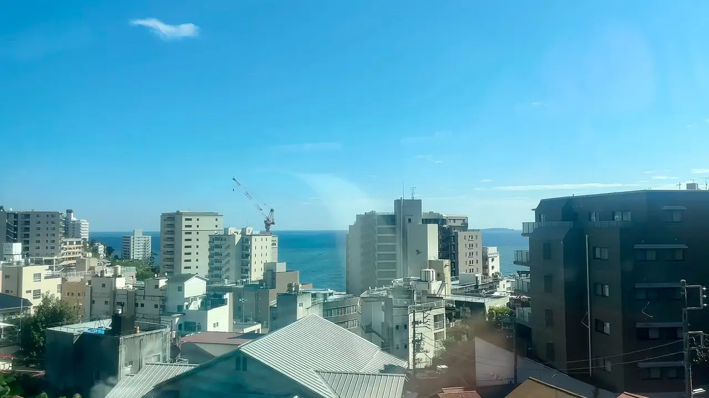
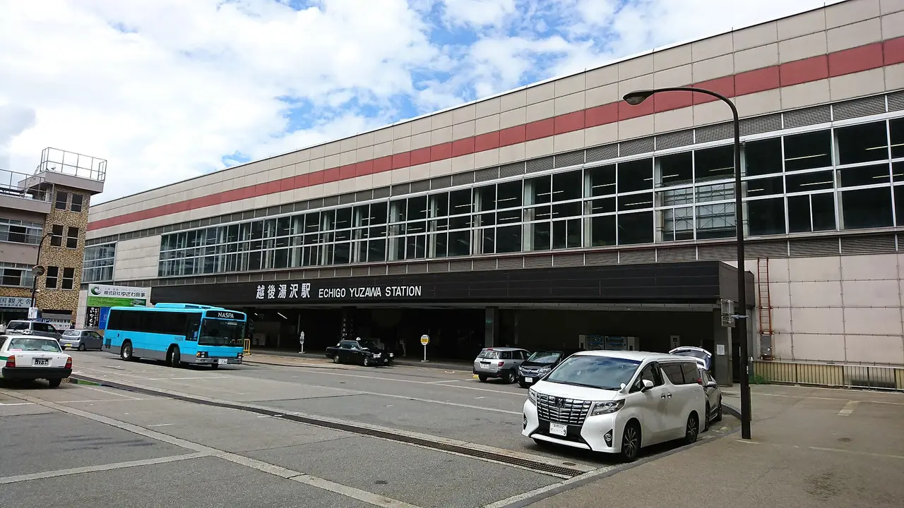
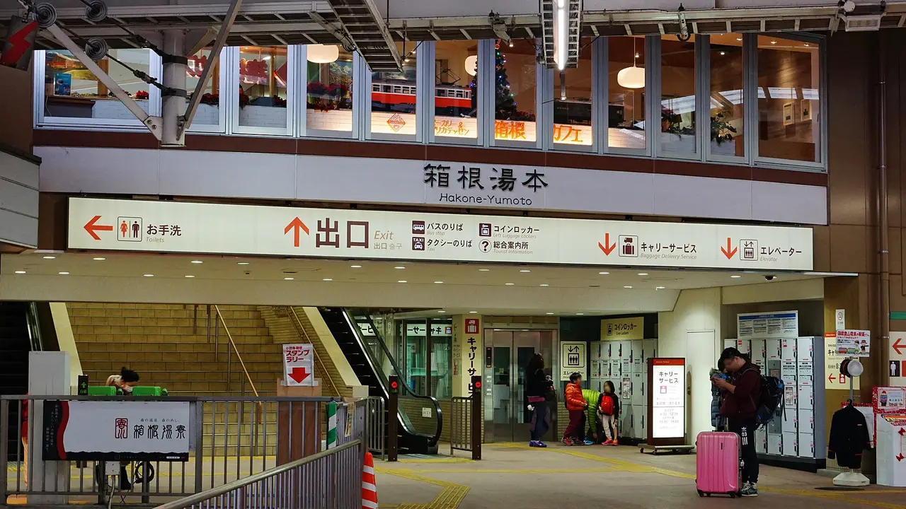
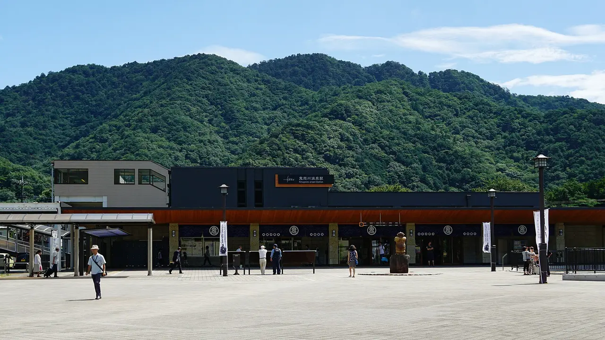
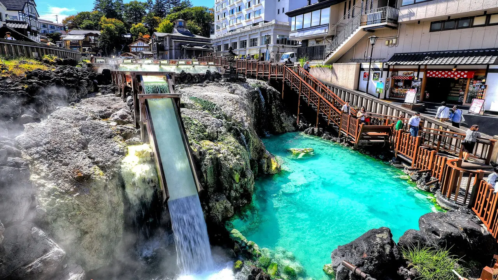

Onsen towns near Tokyo you can visit without a car
Almost every list of onsen towns near Tokyo says they are reachable without a car. That is true, and it is also where the useful information usually stops. What actually determines your day is the last leg: whether the station is inside the town or half an hour of bus away from it, how often that bus runs, and what happens if you miss the last one. This guide sorts six towns by exactly that. Three of them put you within walking distance of hot water the moment you step off the platform. Two need a bus, and we give the fare and the frequency. One is closer to Tokyo than most people's commute.

The last leg, which is the whole question
Sorted by total time from Tokyo. "Bus" means a scheduled local bus after the train — not a taxi, not a hotel shuttle.
| Town | Prefecture | Train | Rail time | Last leg | Total |
|---|---|---|---|---|---|
| Atami熱海 | Shizuoka | Tokaido Shinkansen, direct | ~45 min | None — town starts at the station | ~45 min |
| Echigo-Yuzawa越後湯沢 | Niigata | Joetsu Shinkansen, direct | ~80 min | None — footbath outside the exit | ~80 min |
| Hakone-Yumoto箱根湯本 | Kanagawa | Odakyu Romancecar from Shinjuku, no change | ~85 min | None — walk into the town | ~85 min |
| Kinugawa Onsen鬼怒川温泉 | Tochigi | Tobu limited express from Asakusa | ~90 min | None — station named after the onsen | ~90 min |
| Ikaho伊香保 | Gunma | Rail to JR Shibukawa | — | Bus, ~30 min | ~2.5 h |
| Kusatsu草津 | Gunma | Ltd Exp Kusatsu from Ueno to Naganohara-Kusatsuguchi | — | JR bus, 25 min, ¥710 | ~3–3.5 h |
Read the table this way. The four with no last leg are the ones you can decide on in the morning and be soaking by lunchtime. The two with a bus are better trips — Kusatsu in particular is the most extraordinary of the six — but they are commitments, not impulses, and the bus timetable is the thing to check first.
The six, honestly
Atami, Shizuoka — closer than most commutes

About 45 minutes direct from Tokyo Station on the Tokaido Shinkansen, and under 30 from Shinagawa. That is shorter than a lot of people's daily journey to work, which is the fact worth holding on to: an onsen town on the coast is a shorter trip than most Tokyo suburbs.
You do not need to go anywhere after arriving. Just outside the station there is a free public footbath, Ieyasu no Yu, named for the shogun who bathed here; you can be sitting with your feet in hot spring water within a few minutes of getting off the train. The town runs up the hillside from the sea, which means stairs and slopes, but everything is walkable.
✔ The shortest journey of any real onsen town from Tokyo, with a free footbath at the door and the sea in view.
✘ Atami is a resort town, developed and sometimes brash — it is not a quiet mountain village, and it gets crowded at weekends.
Best for: a genuinely spontaneous trip, or a half day added to something else. See the Shizuoka guide.
Echigo-Yuzawa, Niigata — the snow-country one, 80 minutes away

The Joetsu Shinkansen puts you in Echigo-Yuzawa in about 80 minutes, and the station is the town. There is a footbath just outside the front exit. Inside the station, Ponshukan runs a sake-tasting hall and a bath where hot spring water is mixed with sake — which is either the best or the worst idea you have heard today.
This is snow country in the literal sense, the setting of Kawabata's novel, and in winter the contrast between the tunnel and what is on the other side of it is the entire point of coming.
✔ Shinkansen straight into an onsen town with facilities inside the station building itself. Excellent in deep winter.
✘ Out of ski season it is quiet in a way some people find flat. Niigata scores 4/5 for nature but 2/5 for urban amenities in our dataset.
Best for: winter, and for people who want the train journey to be part of the trip.
Hakone-Yumoto, Kanagawa — the one everyone means

Hakone is the default answer and it earns it: about 85 minutes from Shinjuku on the Odakyu Romancecar with no transfer, arriving at Hakone-Yumoto in the middle of the onsen district. Reserved seats on a limited express with a view, straight into the town.
Hakone is also the one place on this list where the car-free question has a proper answer beyond the arrival: the area runs on a connected chain of mountain railway, cable car, ropeway and boat, and a single Hakone Freepass covers it. You can spend two days there and never want a car.
✔ Direct reserved-seat train from central Tokyo, and the best public transport network of any onsen area in Japan.
✘ Correspondingly busy, and correspondingly priced. Kanagawa scores 2/5 for nature in our dataset — the mountains are real, the crowds are too.
Best for: a first onsen trip, and for anyone who wants Mount Fuji in the itinerary. See the Kanagawa guide and our ryokan guide.
Kinugawa Onsen, Tochigi — and Nikko in the same trip

About 90 minutes from Asakusa on the Tobu Nikkō limited express, into a station named after the hot spring. The water was once reserved for the monks and daimyo of Nikkō and only opened to the public in the Meiji period, at which point it became one of the Kantō region's leading onsen resorts.
The practical argument for Kinugawa is what is next to it. The same line serves Nikkō, so the shrines, the mountains and the onsen fit into one trip without a single change of transport mode.
✔ Direct limited express from Asakusa, and the only town here that pairs naturally with a UNESCO World Heritage site.
✘ The riverside strip has some large concrete hotels from a different era, and a few abandoned ones. Tochigi scores 2/5 for access in our dataset.
Best for: combining onsen with Nikkō. See the Tochigi guide.
Ikaho, Gunma — 300 steps, and a 30-minute bus
Ikaho is the first town on this list that genuinely needs the bus: rail to JR Shibukawa, then about 30 minutes by bus, roughly 2.5 hours from Tokyo in total.
What you get for it is the most distinctive town shape of the six. Ikaho is built around a stone stairway of some 300 steps running up the hillside, with baths, shops and inns opening off it on both sides. The town is a staircase. That is charming and it is also a warning if you have a suitcase or bad knees.
✔ A townscape you will not find elsewhere, and quieter than Hakone for a similar journey time.
✘ The bus is unavoidable, and the stairs are the town. Gunma scores 1/5 for nature and 2/5 for access in our dataset.
Best for: people who like a town with one strong idea. Pack light.
Kusatsu, Gunma — the best water, the longest journey

Kusatsu is three to three and a half hours from Tokyo and worth every minute. Take the Limited Express Kusatsu from Ueno to Naganohara-Kusatsuguchi, then the JR Bus Kantō service to the Kusatsu Onsen bus terminal: 25 minutes, ¥710 one way, buses roughly hourly and often once or twice an hour, timed to meet the limited expresses. The first bus is around 06:20 and the last one back leaves the terminal around 19:50.
The town has about a hundred sources producing something in the order of 34,000 litres a minute, and the centre of it is the Yubatake — a field of wooden channels where water is cooled by air rather than by adding anything to it. It is also, unusually for Japan, widely described as tattoo-friendly.
✔ The most spectacular onsen town in the Kantō region, and the bus is frequent and cheap enough that the connection is not the problem people fear.
✘ Three hours each way makes a day trip punishing. This one deserves a night.
Best for: one overnight rather than a day trip. Check the return bus before you plan your evening — the last one is earlier than you think.
Which one, in one line each
| If you have… | Go to | Because |
|---|---|---|
| A free afternoon | Atami | 45 minutes, free footbath at the station |
| A full day | Hakone | Direct Romancecar, and the freepass network once you arrive |
| A day and an interest in Nikkō | Kinugawa | One line covers both |
| A winter weekend | Echigo-Yuzawa | Snow country, 80 minutes, everything at the station |
| One night | Kusatsu | The best water on the list; too far to rush |
| Something different | Ikaho | A town built up a staircase |
Three things that catch first-timers
You wash before you get in. The bath is for soaking, not for cleaning. Sit at the shower station, wash thoroughly, rinse, then enter.
No swimwear, and the small towel does not go in the water. Fold it and put it on your head or the side of the bath. This is not a quirky custom; it is the rule everywhere.
Tattoos are still an issue in many places. Policies vary and are changing, but plenty of baths still refuse entry. Kusatsu is one of the towns commonly described as tattoo-friendly; elsewhere, check before you travel or look for a private bath (貸切風呂 kashikiri-buro).
The Japanese you'll meet
| Japanese | Reading | What it means |
|---|---|---|
| 温泉 | onsen | Hot spring. On a sign it means there is one here. |
| 日帰り温泉 | higaeri onsen | Day-use bathing, no overnight stay. The words to look for. |
| 足湯 | ashiyu | Footbath. Usually free, usually outdoors, always welcome. |
| 露天風呂 | rotenburo | Open-air bath. |
| 貸切風呂 | kashikiri-buro | Private bath you reserve — the usual answer for tattoos or families. |
| 源泉かけ流し | gensen kakenagashi | Free-flowing spring water, not recirculated. A quality claim. |
| 湯畑 | yubatake | "Hot water field" — Kusatsu's cooling channels. |
| 入浴料 | nyūyokuryō | Bathing fee. |
Common questions
Which is genuinely the easiest without a car? Atami. Shinkansen from Tokyo Station, and the town begins outside the ticket gates.
Can I do Kusatsu as a day trip? You can, but three hours each way plus a bus at both ends makes for a long day with a short soak. It is the one on this list that most repays staying over.
Do I need to book a ryokan to bathe? No. Every town here has day-use baths (日帰り温泉) and public bathhouses, usually a few hundred yen.
What if I have tattoos? Check each bath's policy, look for private baths, and note that Kusatsu is commonly described as tattoo-friendly.
Is the JR Pass useful for these? Partly. It covers the JR legs to Atami, Echigo-Yuzawa and Naganohara-Kusatsuguchi, but not the Odakyu Romancecar to Hakone or the Tobu line to Kinugawa.
Where to go, what to eat, what to bring home — one Japanese region at a time, with the practical details guides leave out. Free, no spam, unsubscribe anytime.
Sources: Atami's roughly 45-minute Tokaido Shinkansen journey from Tokyo Station and under 30 minutes from Shinagawa, and the free Ieyasu no Yu footbath outside the station, from Atami city tourism materials and Japanese travel media. Echigo-Yuzawa's roughly 80-minute Joetsu Shinkansen journey, the footbath outside the station exit and the Ponshukan sake-tasting hall and sake bath inside the station, from Niigata tourism sources. Hakone-Yumoto's approximately 85-minute Odakyu Romancecar service from Shinjuku without a transfer from Odakyu and Japanese travel sources. Kinugawa Onsen's roughly 90-minute Tobu Nikkō limited express from Asakusa, and its history as water reserved for the monks and daimyo of Nikkō before opening to the public in the Meiji period, from Tochigi and Japanese travel sources. Ikaho's 30-minute bus from JR Shibukawa, its approximately 2.5-hour total journey from Tokyo and its roughly 300-step stone stairway from Gunma tourism materials. Kusatsu's Limited Express Kusatsu from Ueno to Naganohara-Kusatsuguchi, the JR Bus Kantō connection of about 25 minutes at ¥710 one way with roughly hourly and sometimes more frequent departures timed to the limited expresses, first departure around 06:20 and last departure from the Kusatsu Onsen bus terminal around 19:50, the roughly 100 sources producing on the order of 34,000 litres per minute, the Yubatake cooling channels and the town's widely reported tattoo-friendly policy, from Gunma prefectural tourism materials, JR Bus Kantō information and Japanese travel media. Prefecture profile scores from NihongoHub's 47-prefecture dataset. Rail and bus times are typical fastest services and vary by departure; timetables and fares change seasonally — confirm with the operator before travelling, and check the last bus before planning an evening.